小多，我是不是喬巴？
打死那隻蚊子之後，整個晚上都睡得很香甜，
手錶的鬧鐘是設定成早上七點，但是我很乖的在六點就爬了起來，
跑去刷牙洗臉，然後在那種傳統式的廁所大便，傳統到整個是開放式的，要是有人現在進來，
就可以跟我說聲早，然後一起蹲著拉屎。
昨天行李沒什麼拿出來，所以還挺好整理的，
但是因為這次有五個背包，又是旅行剛出發，所以有一點小問題，我常常要找個什麼東西，
尤其是小件的，總得一個包包翻過一個才找的到~_~ 雖然是自己打包的行李，但是對內容物還不是很熟悉。
把單車和行李從地下三樓拿上去的時候，發現小馬睡在櫃台那值夜班，
趙叔可能是昨晚喝太多了還是怎麼著，也睡在櫃台的沙發那。
還那麼早不想吵醒他們，就輕聲的開門，然後開始將背包一個一個掛回車上。
因為這些背包真的很重，LGS-GMT每天要載這麼多東西還有我，實在太可憐，
所以雖然麻煩了點，但是我每天找到過夜的地方之後，一定都會把背包卸下來，讓單車也輕鬆一下。
每次不是叫單車就是叫LGS-GMT，這樣實在太不親切了，
再怎麼說這台車也是要和我一起遊蕩個大半年，不幫它取個名字實在說不過去。
因為它載了很多很重的行李，感覺很像一台載卡多，所以我從現在開始，就稱呼我的單車為『小多』。
就這麼說定了，沒的異議，請各位記性好一點，不要沒多久就忘了小多是什麼東西。
在店門口掛完背包，小馬和趙叔也醒了，我拿出兩個水壺請小馬幫我加點水，路上可以喝。
結果只有保溫瓶裡的熱水可以加，一倒進去，整個杯子被熱的軟趴趴的～
趙叔問我喝不喝茶？『這有些茶葉，雖然不是什麼好茶。』
所以兩個水壺，一個就裝開水，一個就放了一些茶葉，裝熱茶。

我比趙叔兒子還小四個月，所以他很照顧我。
昨天住店的5塊錢押金，我就拿來買了一包方便麵(2.5塊)、兩根小熱狗(一隻1塊)、一瓶可口可樂(3塊)。
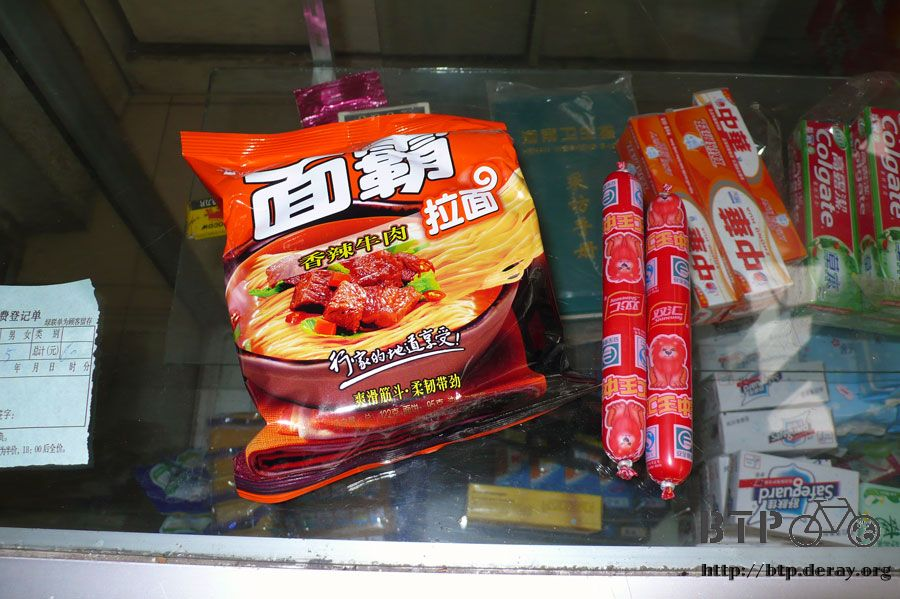
這樣把押金用完了，順便也剛好拿一張100塊的大鈔，跟小馬換點零錢。
共找回97.5塊，人民幣真的很酷，100塊是紙鈔，50塊是紙鈔，10塊是紙鈔，5塊是紙鈔，1塊是紙鈔，連五角居然也是紙鈔。
連一個硬幣也沒有呀！真是太熱血了。
小馬全部都用5塊5塊的紙鈔找給我，方便我路上買東西。
拿出北京市的地圖，昨天投宿的時候，只知道這裡很便宜，但是地理位置都還搞不清楚。
趙叔說這地方地圖上找不著，在大概的位置幫我畫了一個圈，
七點半的時候，我從這個圈出發，要騎到天壇去，預計八點的時候抵達，
可是怎麼知道北京這麼大~_~而且路還挺複雜的。
騎著全副裝備的單車在北京街頭，路人好奇的眼光從來沒停過，猛盯著我瞧，
北京的街道，就分兩種，汽車道和單車道，沒有機車在路上跑，
星期一的一大早，路上固然很繁忙，但是連一輛機車都看不到，那跟在台北的街頭真是大異其趣。
我很努力的從趙叔幫我畫的那個圈找出我的位置，走錯了幾次路，但後來還是順利的到了天壇公園，
只是比預定的時間晚了40分鐘，第一天就大遲到，真是對在那邊久等的記者感到不好意思。
接受完訪問之後，還有很多大媽叔叔伯伯嬸嬸的加油，九點多我就正式的從天壇開始騎車了。
騎了一下子才想到，剛剛應該叫個什麼好心人幫我在起點拍張照片留念一下的 =.=
錯過了就算了，再回去一次還真有點不好意思。
今天的目標是保定，只要走京石高速公路旁邊的輔路，就可以到，聽路人講蠻簡單的，
從地圖上看起來也蠻簡單的，但實際騎起來又是另外一回事了。
在北京市區的時候，我問了十幾個人，保定往那個方向走呀？
只要有叉路出現，我一定會問個人確定之後再走，即使問的這麼仔細，
即使我也看到了往保定的告示牌，上面還很清楚的寫著138公里，
即使看起來這麼簡單的路線，我還是迷路了 /_\ 而且是整個超級大迷路。
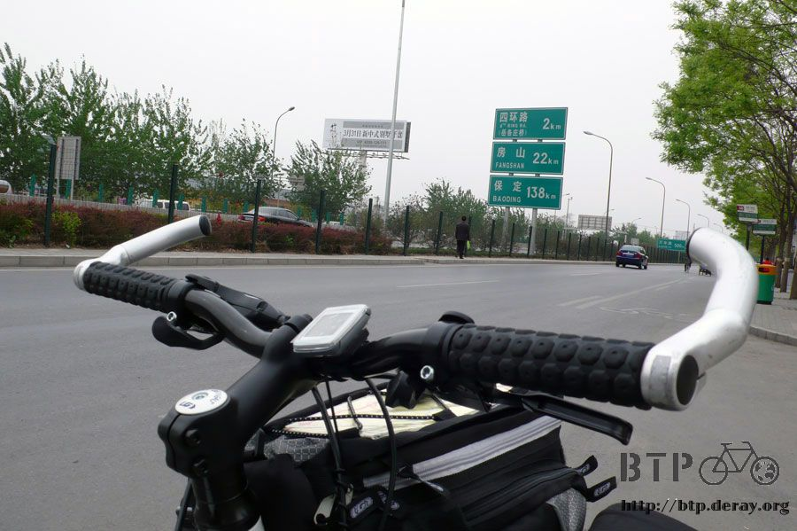
早餐沒有吃，拿出包包裡的餐包，那是在飛機上跟隔壁不吃的人拿的，
兩三口塞到肚子裡先墊一下，但是還是很餓，
十點半的時候，看到路邊有在賣炒飯，看起來很好吃的樣子，
所以我就停下來休息，點了一份炒飯來吃。這可不是用瓦斯爐的路邊攤，是用炭火來炒的說。
老闆娘也姓趙，就稱呼叫趙大娘好了，她叫女兒幫我炒，一份炒飯居然只要三塊錢！
這就是我夢寐以求的旅行呀！
大概是台灣兩份炒飯份量的超大炒飯，還配上了辣蘿蔔和黃豆，
吃起來真是有夠鹹，配著開水才嚥的下去，邊吃邊跟趙大娘聊天，
原來他們是江蘇來的，順便問了問她女兒的名字，趙大娘說這是她第三個女兒，所以就叫趙三。
然後17歲的趙三小姐就在旁邊跺腳，『娘～！妳別胡說。』
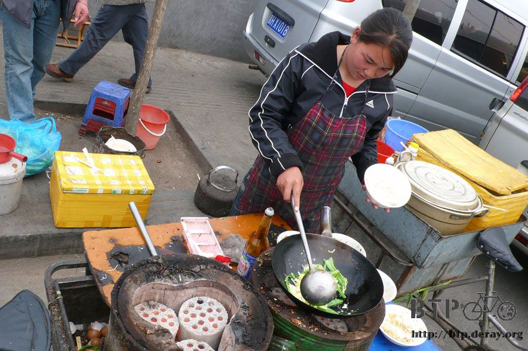
吃完飯，肚子整個很撐，這樣很賺，早餐跟午餐一起解決，為了配飯，喝了整整一壺水，
順便跟趙大娘裝點開水路上喝，她也很熱心的答應了。
早上剛出發的時候，以及到天壇的時候，都是陰陰的天氣，吃完飯之後太陽就出來了。
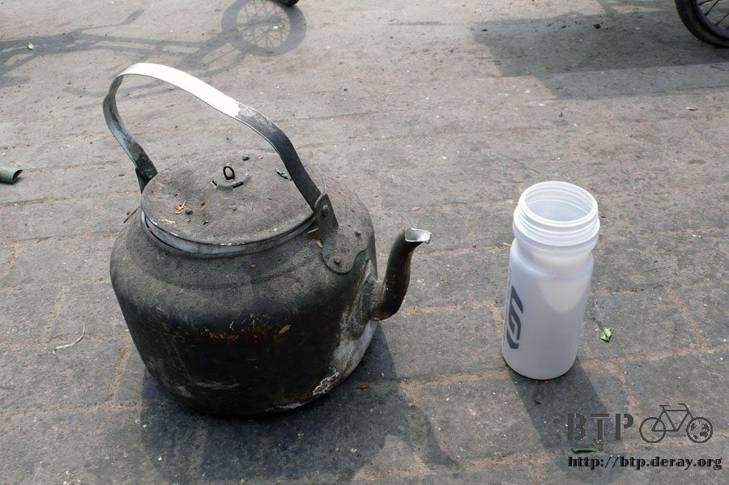
吃飽喝足繼續上路，這時候都還沒離開北京的範圍呢，北京真的很大很大很大 ~_~
剛剛說過了，雖然我一路上很認真的問人家『先生！問問，保定往哪走？』
我問過公安，路旁抽菸的大叔，賣水果的販子，賣鴿蛋的大嬸，每個人都很確定的跟我說了他們以為是正確的方向。
然後我就這麼樣的，輕易的迷路了。
保定明明是在北京的正下方。理論上我只要往南邊走就可以了。
可是怎麼我一直在往西邊騎，而且有時候還反過來往北邊騎 ~_~
而且這條輔路明明是京石高速的，理論上應該很大、很直、很長才對，
但是怎麼我騎的路都是鄉間小路的感覺，
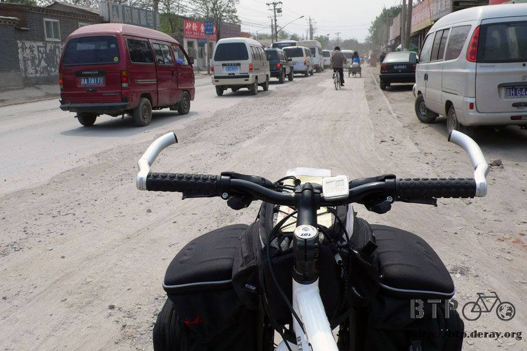
路況不好還不打緊，路上跑的全部都是運煤礦的大卡車這是怎麼回事？
每一輛開在我背後大概50公尺的時候，就開始對我大鳴三聲喇叭，當我是個聾子就對了。
我就算不聾也被你們叭到聾了 /_\
然後開過我身邊的時候，每一台都揚起好濃的灰塵風飛沙，還有煤灰風飛沙，
雖然我心裡面一直很懷疑這條路有九成的可能性，是我走錯了。
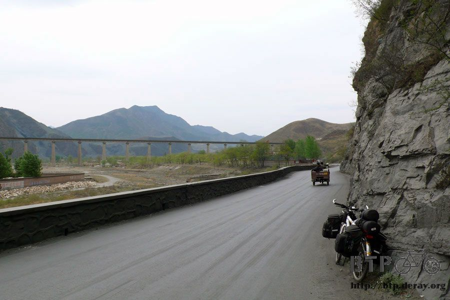
雖然有九成這麼高的把握，但我還是沒有回頭走，因為我很懶得走回頭路。
我想，就算走錯一點點，等一下再往前面走，應該還是可以接回正確的路吧。
就這樣塵土和煤灰飛揚，我在這條路騎了80幾公里，
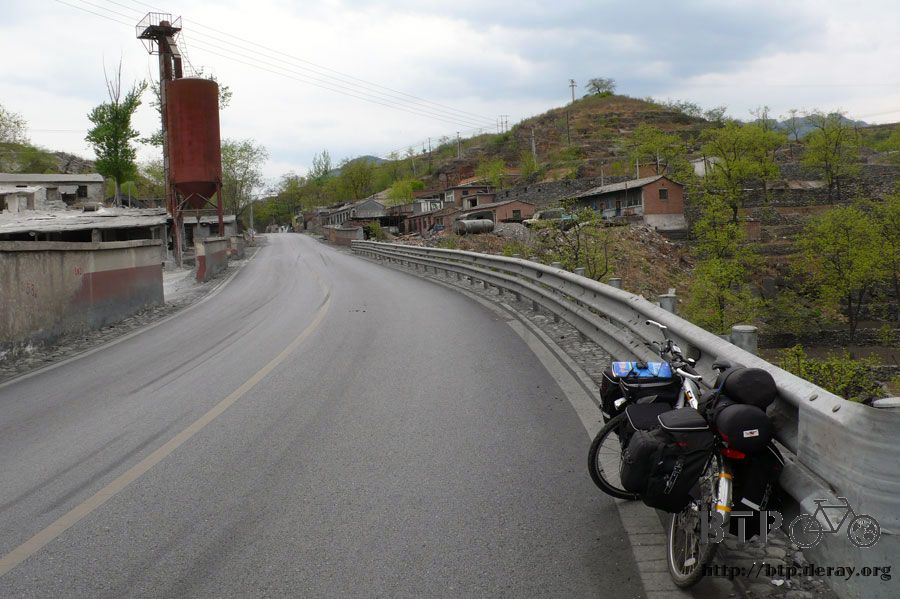
路上每一個指標我都找不到對應的地圖位置在哪裡，問人家保定往這走對嗎？
每個人都跟我搖搖頭說這邊走的話就繞一大圈了，得回頭往北京那去才行。
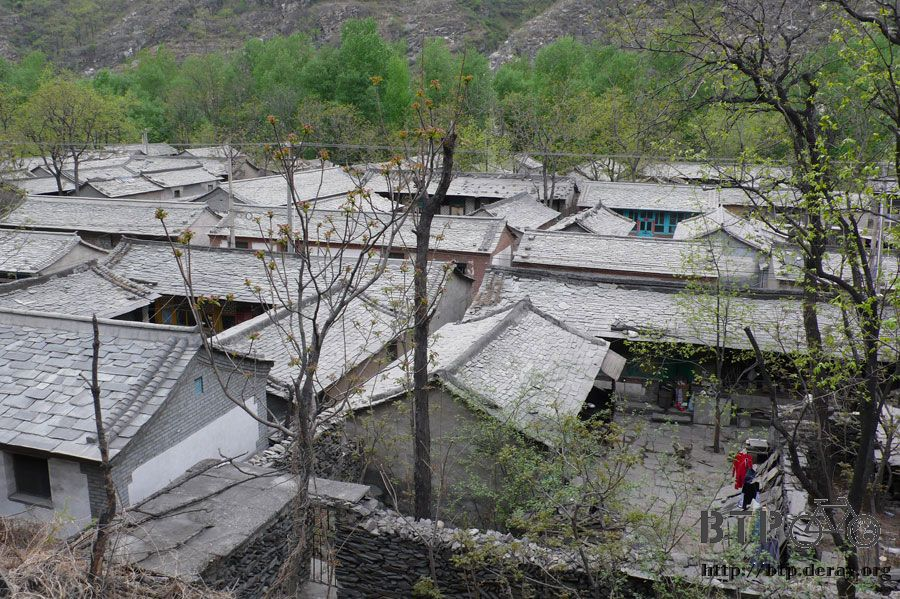
可我就是不信邪，硬是不想往回走。
從早上十一點走到下午三點，在一個小狗翻垃圾的小路邊，從一個大叔那，我終於確定我走錯路了，
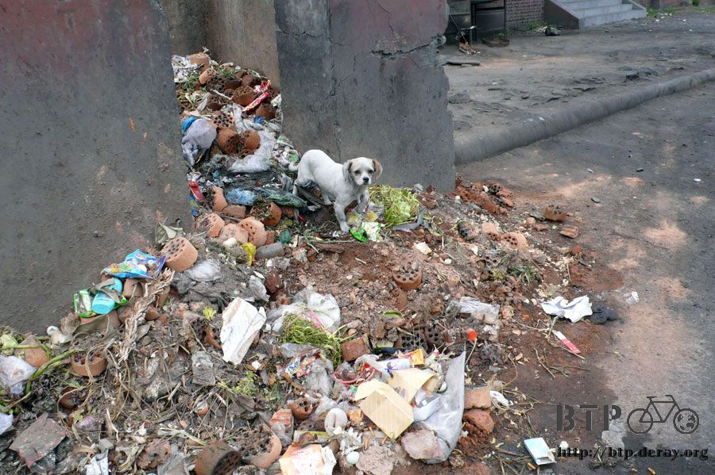
到下午三點多開始肚子有點餓的感覺，就把早上在小馬店裡買的小熱狗吃掉兩條，
然後又吃掉了從台灣帶來的一包餅乾墊肚子，騎腳踏車不用加油，但是人要補充熱量才騎的動。
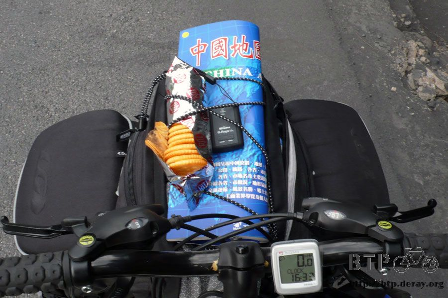
本來應該往南走的我，因為一路往西走，走的太深了，就跑到應該是產煤的『房山』，
所以才會這麼多運煤的大卡車跑個不停，叭個不停，煤灰飛個不停。
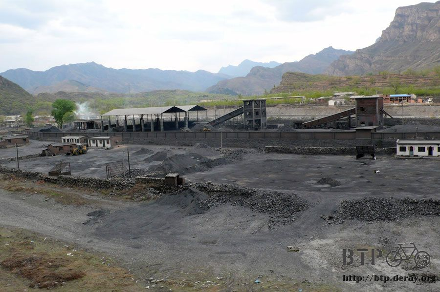
煤灰多到有一些人，就拿著掃把和手推車，沿路掃這些煤灰堆成的小山，這樣也是滿滿一車的煤炭。
因為騎錯路的關係，今天肯定到不了預定的保定，所以只好沿路找找，看有沒有落腳的地方，
我打算騎到下午五點過後，才開始找旅店。
大概在下午五點半的時候，在路上遇到一群下課的小學生。
大陸人的小孩，每個臉蛋的腮幫子都紅通通的，看了好想給他捏下去。
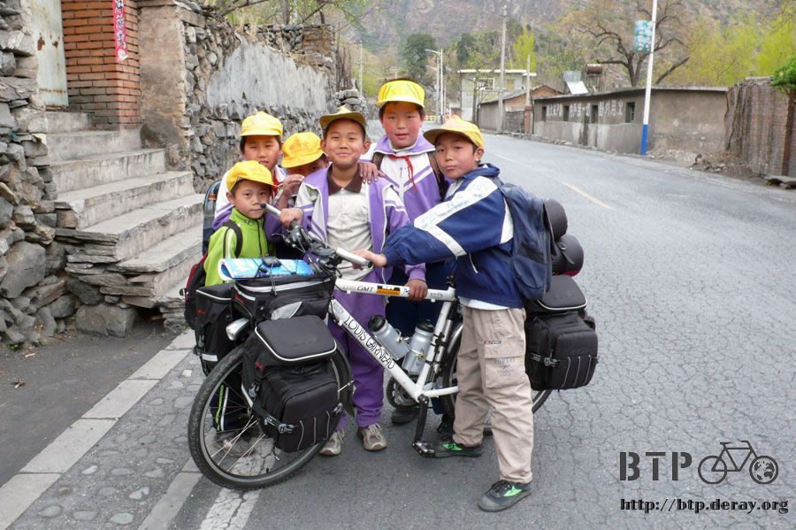
拍了張他們的照片，順便和他們交換一下情報
『這路上，那裏有住店的地方？』
這些小孩是下布國小的小朋友，有的說五里路，有的說十里路，後來他們討論一下，就給我『七里路』這個答案。
為了報答他們，我也對他們的問題有問必答，他們對小多最有興趣。
『包包裡都裝些什麼呀？』
『這是什麼呀？』指著變速器的小孩問我。
『那這又是什麼呀？』指著水壺的小孩問我。
不會吧，連水壺都沒看過？可能單車用的水壺比較時髦吧。
跟他們揮大手說掰掰之後，就要往下再騎個七里路，希望就能找到過夜的地方。
小孩的情報還挺正確的，在六點十分，天還挺亮的時候。我就看到了一間『好運來飯庄』。
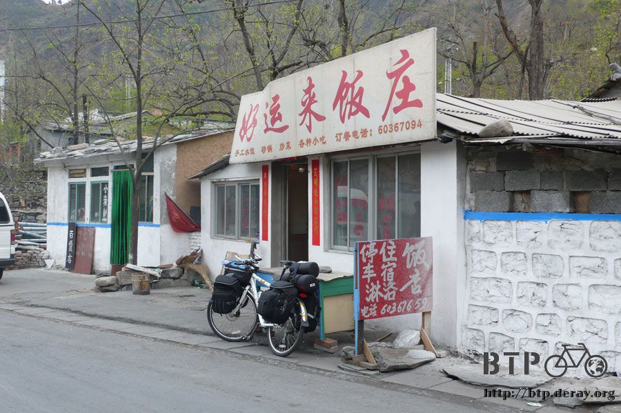
問了一下『住店一晚多少錢呀？』
『10塊！』
哇塞～是不是這麼便宜？十塊人民幣也可以住一個晚上？
而且不用登記什麼身分證，那又不用洩漏我的身分了，就說我是北京來的吧，這句話倒也是事實。
但不是住在這邊，這裡是餐廳和雜貨店，住的地方要往斜坡下走，那個樹上開花的就是了，這邊是他們的家。
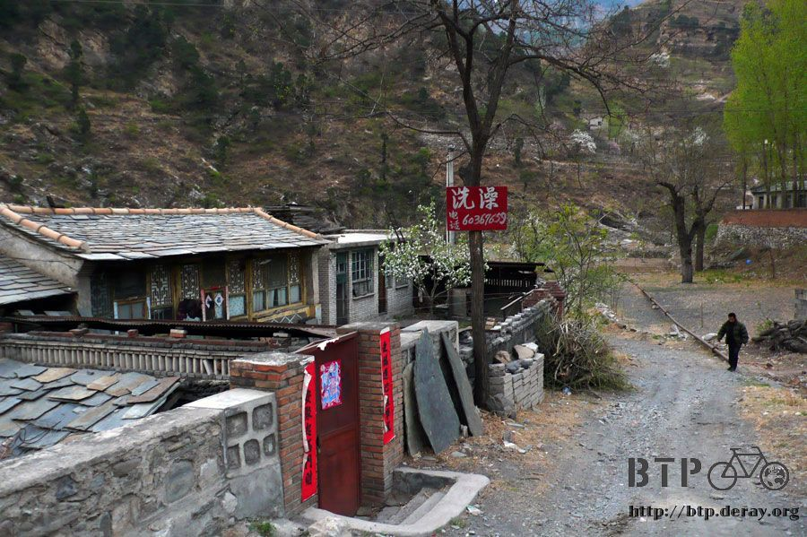
一間比較大的，放了六張床拿來給人住，一間大概只有兩坪大小的地方，則是他們自己睡覺的地方。
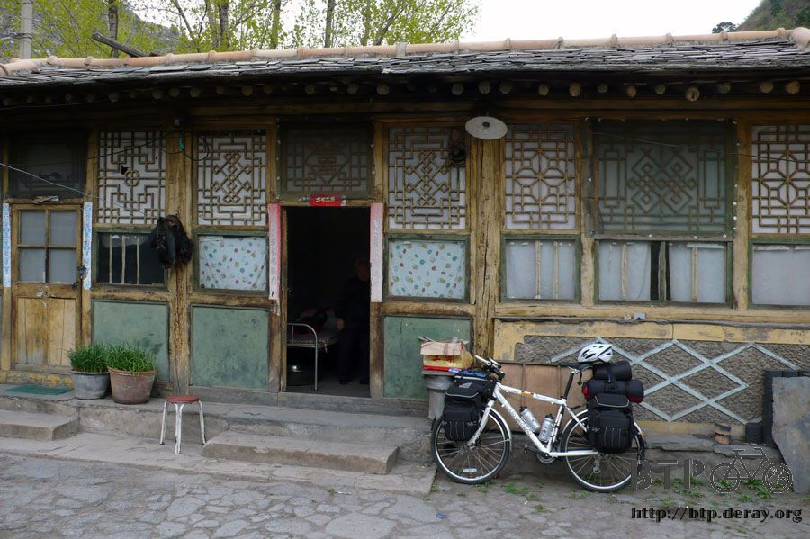
這個家70多歲的姥姥，邁著不便的腳幫我開門，我把小多放進去之後，發現牆壁上很神奇的貼著SHE不知道是幾年前的海報~_~
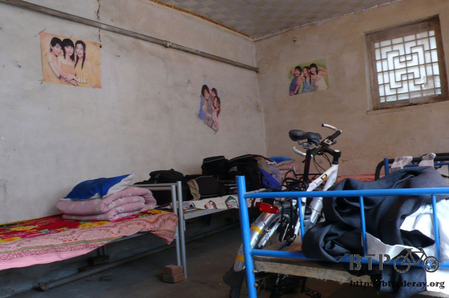
問了一下可不可以洗澡呢？
姥姥說今天沒燒熱水，這裡的人就星期五或是星期六洗一次，沒有天天洗澡。
我想米莎莎應該很想搬到這裡住吧，這樣就不會天天需要洗澡了。
姥姥幫我舀了一盆水，我就用這盆水，洗洗髒兮兮的手，還有髒兮兮的臉(都是煤灰呀)，
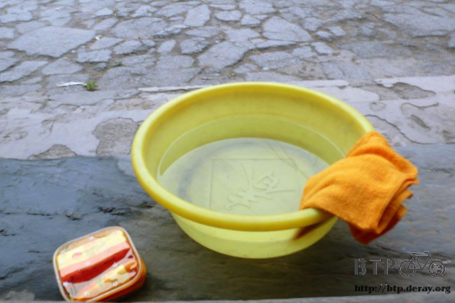
也擦了一下身子，這樣就算是洗過澡了。
卸下小多身上的沉重背包，然後上去飯庄裡吃東西。
問老闆娘有什麼可以吃，她說有餃子，看是要羊肉的，豬肉的還是素餡的。
所以我就點了半斤豬肉的餃子，居然不是算吃幾顆幾顆，而是算半斤還是一斤，
在我等著吃水餃的時候，這個家的小朋友，一直在我面前跑來跑去。
『你在幹什麼呀？』小孩問。
『我在寫日記，記錄今天發生的事情。』剛寫完晚餐吃半斤水餃這幾個字。
『你從哪來呀？』
『我從北京來，八點多開始騎車，本來想去保定，結果迷路就跑到這裡來了。』
小孩笑得樂不可支，老是被問怎麼行，我也開始問他問題。
『你叫什麼名字？』
小孩的名字叫做劉理成，十歲，是家裡最小的三兒子。
不是讀今天經過的下布小學，而是念中心小學三年級。
『那這是哪裡呀？』
『下河。』
好陌生的名字，我從來沒計畫要到這裡來呀@@"
沒關係，總算知道了現在的位置，那也就夠了。
半斤的水餃送了上來，數了數一共有27顆，一斤十塊，所以半斤只要五塊錢。
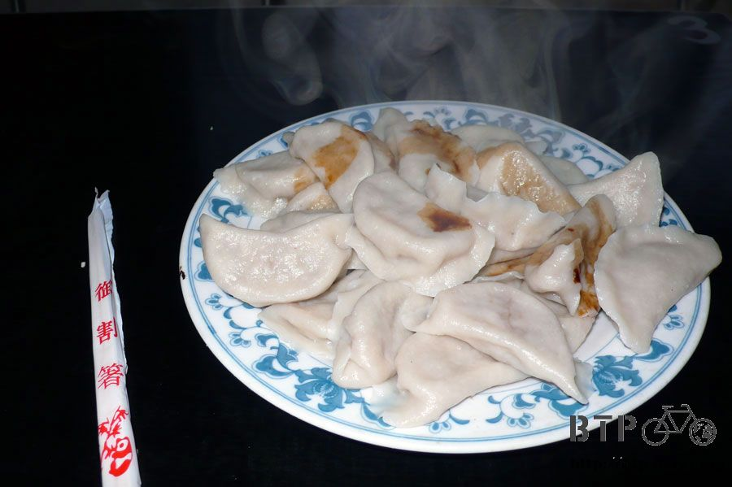
看著滿滿一盤的水餃，早知道剛剛不要那麼貪嘴，把那一包餅乾留下來當成儲糧該多好 >"<
劉理成整個很喜歡表演給我看，一下拿出兩面扇子跳扇子舞，一下表演起拳腳功夫，
掃堂腿、無影腳，一招接著一招使，最後擺了個黃飛鴻的姿勢之後對已經看傻的我說
『儘管來吧～！』
小鬼頭，你是當真的嗎@@"
還好他姥姥叫他別玩了，先讓我吃飯吧，所以他就跑去拿了他的寶貝出來給我看。
是一輛連車殼都沒有的四驅車，像這樣的小朋友真是令人疼惜，
那麼樣的單純，比起現在台灣的小孩，每個人不是一大疊甲蟲王者的卡片，就是嬌生慣養的像個王子。
我帶他來看看小多，他也是很稀奇的東摸摸西摸摸，然後又指著水壺問我說『這是啥呀？』
這是水壺呀~_~小朋友 水壺呀～
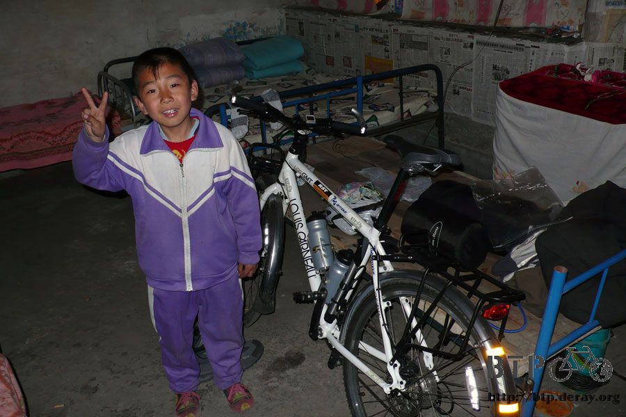
吃完餃子，也就飽了，回房裡的時候已經入夜了，現在這邊大概七點半左右開始天黑。
理成看我吃飽了，整個很開心，因為這時候她姥姥那一句『先讓哥哥吃飯吧。』已經失去效力了。
他眼睛發亮的跟著我走回去，擺明了就是要我陪他玩的意思 ~_~
我想起了今天有一張5角的零錢，就偷偷的拿給理成，
『噓～不要跟媽媽說。你是乖孩子，給你一點零用錢，那你就不可以來吵我好嗎？哥哥要睡覺了。』
回房後，我一邊整理今天的照片和遊記，一邊聽劉理成和她姥姥在隔壁房聊天。
這個客房今天只有我一個人睡，房裡雖然只有一個昏黃的小燈，但是好加在有一個插頭。
可以讓我把相機和GPS充滿電，明天繼續加油。
把GPS的軌跡抓出來用Google Earth一看，差點沒有暈倒。
這整個迷路也迷的太遠了吧，我今天騎了120公里，通通都在往西邊騎呀 orz
而且一不小心跑到山裡了，姥姥吃飯的時候跟我說，這路再往下走的話，就要開始爬山了，而且變成石頭路，不太好走。
總之就走一步算一步吧，反正西安本來就在北京的西南方。
雖然我今天都沒有往南走，但起碼有往西邊騎了一大段的距離。
我就是喜歡這種充滿變數的旅行，要是今天真的如計畫的抵達保定，
那我大概會有點疲憊，因為明天就又要如計畫般的往石家莊騎。
這樣也不是不好，只是太規矩了些，少了點旅行冒險的感覺～
海賊王裡的喬巴，本來是一隻麋鹿，但是因為吃了人人果實，所以變成麋鹿人。
我什麼東西都沒有吃，但是看來我天生就是一個無藥可救的迷路人 ~_~
小多，難為你陪我騎了一整天，反正只要可以到西安就好了，
迷路沒關係，路線也很隨意，男子漢不拘小節。
繼續閱讀：4.24 迷失桃花源
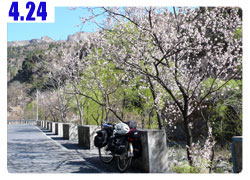
中國-人民幣－ 1：4.3 台幣
4.23 |
總計：26元 |
小馬那邊買的可樂3元、小熱狗兩隻2元、康師傅方便麵2.5元、早午餐吃的炒飯3元、晚餐吃的半斤餃子、5元、住店10元、給劉理成零用錢5角。 |
|